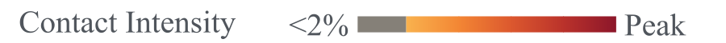
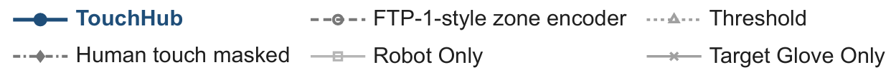

TouchHub: Tactile Retargeting from Human Gloves to Dexterous Hands without Retraining
A shared tactile interface for human gloves and dexterous robot hands
Abstract
3D kinematic retargeting transfers human hand motion across robot embodiments, yet tactile signals remain tied to the glove that recorded them. Differences in sensing principles, taxel layouts, and surface coverage make it difficult to transfer touch from gloves to robot hands. TouchHub maps human glove readings directly to a robot hand’s native tactile channels, without paired cross-sensor contacts or retraining the retargeter. It registers sensor layouts on a shared MANO surface, restores contact footprints with a self-supervised local transformer, and calibrates response scales. Given a new sensor’s 3D layout and unlabeled touch recordings, the frozen model recovers compact contacts and suppresses activation away from the contact region. The resulting human demonstrations improve closed-loop manipulation even with limited robot data.
Cross-Sensor Tactile Retargeting
From glove readings to native robot taxels
TouchHub separates where contact occurs from how a sensor responds. Compare an input press, the measurement from the target sensor, and TouchHub’s reconstruction. The insets magnify the contact; the bars measure centroid error and off-region activation.

Compare with geometric transport, thresholding, and DFM
Surface transport, restoration, and calibration
Geometry projects the source readings onto the target layout. A local transformer restores the contact footprint from within-sensor round-trip supervision, while a monotone calibrator uses unlabeled statistics to match response scales. Scrub the method animation to inspect the components.
See the six glove datasets and their sensor layouts
All six recordings highlight the glove at 10 seconds while the motion continues.

Human–Robot Co-training
Can a robot policy benefit from touch recorded on a human hand? We compare TouchHub with training on robot demonstrations alone and with co-training that masks only the human tactile input. Choose a task and a robot hand to compare the same setting across three methods.
Success / Failure describes the selected rollout. The percentage is the aggregate success rate, not an estimate from the displayed clip.
Co-training Results Summary
On Sharpa, bulb screwing improves from 40% to 93% relative to robot-only training. On XHand, cup separation reaches 100%, compared with 50% for robot-only and 55% with human touch masked. The charts show all three tasks at the full robot demonstration budget.
Full results: six methods and reported 95% confidence intervals
Cross-Sensor Fidelity and Transfer
Across 12 transfer directions, TouchHub reduces log-reading error to 0.60, about 30% below OpenTac-style (0.86). With both Matrix skins held out, false activation falls from 0.568 with geometric transport to 0.062 with TouchHub, an 89% reduction. These are separate experiments with different comparison methods.
Cross-sensor signal fidelity
Onboarding unseen skins
Robot and Glove Demonstration Budgets
XHand bulb-screwing success
First-contact finger prediction

Core mechanism ablations
Synthetic layouts are intermediate MANO layouts for restoration training: real touch is still used, but no recordings from another real skin are required.
BibTeX
Project website citation
@misc{touchhub_project,
title = {TouchHub: Tactile Retargeting from Human Gloves to Dexterous Hands without Retraining},
howpublished = {Project website},
url = {https://ziijialee.github.io/touchhub/}
}